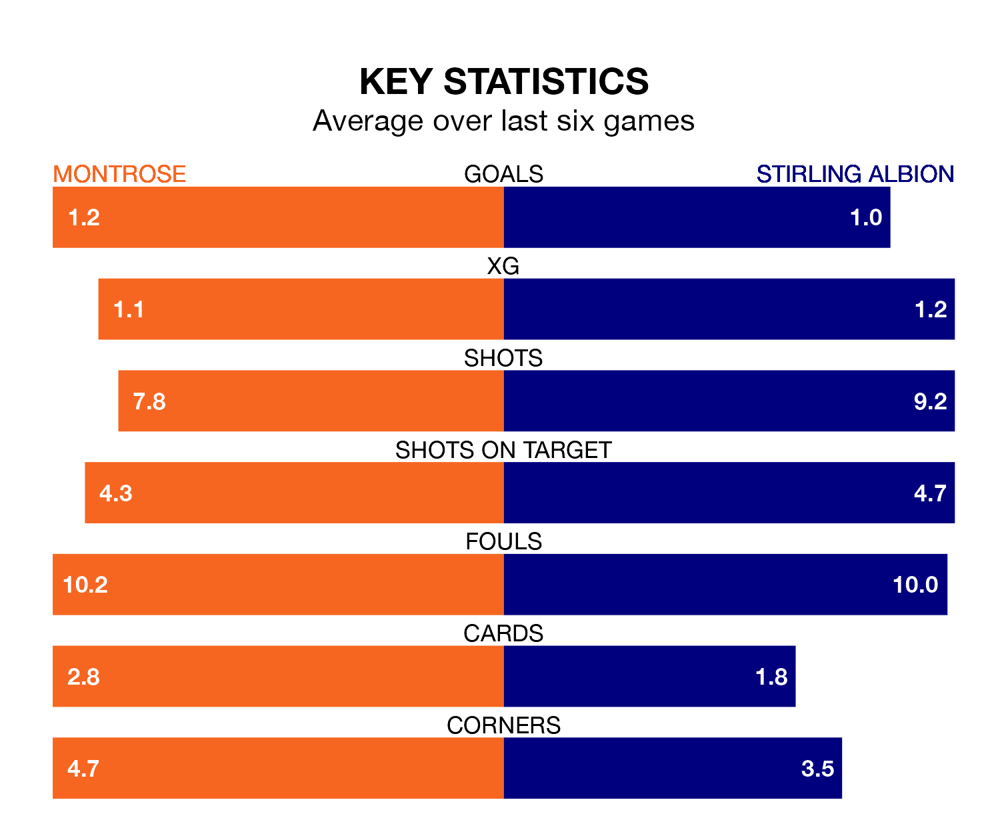

Mid-season relegation candidates Stirling Albion face a challenge away against high-flying Montrose at Links Park on Saturday.
Stirling Albion are eighth in the League One table, and have picked up five wins and four draws in their 18 games to date.
The Gable Endies, meanwhile, are fourth in the standings with 26 points, having won seven and drawn five of their first 19 matches, and are 23 points behind table-toppers Falkirk.
With 15 goals in 18 games so far this season, Stirling are the league's lowest scorers with 0.8 goals per game. And they are conceding more than average, letting in 32 goals at a rate of 1.8 per game.
Montrose, meanwhile, are average scorers, with 1.5 goals per game. They have conceded 1.6 goals per game.
In the last 10 years, Montrose and Stirling have played each other on 18 occasions. They won seven each, and they drew four times.
On average, the Gable Endies scored 1.3 goals and the Binos 1.6 in those matches.
Their last meeting was on September 23, when Montrose won 1-0 at home.
In Blair Currie, Albion can rely on one of the league's safest pair of hands. He has kept four clean sheets in his 18 appearances this season, and only two other 'keepers – Falkirk's Sam Long and Hamilton Academical's Ryan Fulton – have been able to prevent the opposition scoring on more occasions in League One.
In the Gable Endies's net, Cameron Gill has three clean sheets in 19 games.
The hosts are in mixed form in League One, with one win and four draws from their last six games.
With a win and two draws over that period, the Binos' form is slightly worse – they have taken five points from 18, compared to Montrose's seven.
Montrose's last match was on January 6, a 2-2 draw against Annan Athletic, with Graham Webster and Kerr Waddell getting the goals for the Gable Endies.
Stirling lost 5-0 against Falkirk last time out, on December 30.
Updated: 15:34, 08/01/24